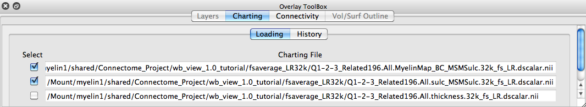
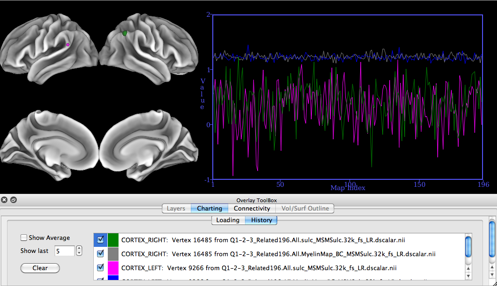

Charting
The Charting tab in the Overlay Toolbox
contains controls for display of data graphs and matrices. The Active
Tab must be in Chart View
in order for this tab to be active (not grayed-out). For
Data/Time Series chart type, Select checkboxes indicate whether
file(s) will be charted when a brainordinate is identified (in
another Viewing Tab).
- Loading shows loaded Data
Series, Matrix, OR Time Series files to select for charting,
depending on which Chart Type is selected in the Toolbar.
- For Data/Time Series
chart type, Select checkboxes indicate whether
file(s) will be charted when a brainordinate
is identified (in another Viewing Tab).
- For Matrix chart type,
select a loaded file from the dropdown (only one matrix file
can be shown at a time).

- History shows a list and line
color for each identified vertex that has been charted.
History is only active for
Data/Time Series chart types.
- The chart displays
a data
value (y-axis) for each Map Index/unit of time (x-axis).
The color of the selected brainordinate will match the
color of (one of) the chart(s) graphed for that
brainordinate.
- Each charted graph
can be turned on/off of the display with the checkboxes.
Most recent charts are listed at the top of the history.
- Show Average displays an
averaged chart for all of the data displayed on
the chart (charts graphed from different files will be
averaged together). If displayed charts have differing
numbers of data points, the average will have the same
number of datapoints as the last graphed chart (listed at
top).
- Show last selects the total
number of charts to be displayed both in the Viewing Area
and in the History. This setting is not retroactive and
one may want to set this for a high value if multiple
files are being charted at once. If a brainordinate "falls
out" of the listed history/display, it will be displayed
as the brainordinate ID symbol color set in Information
Window > Properties.
